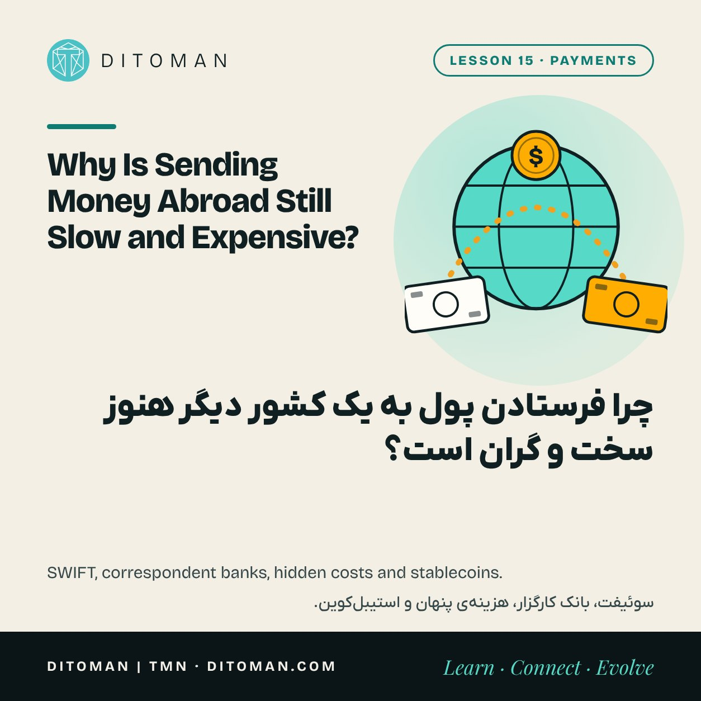
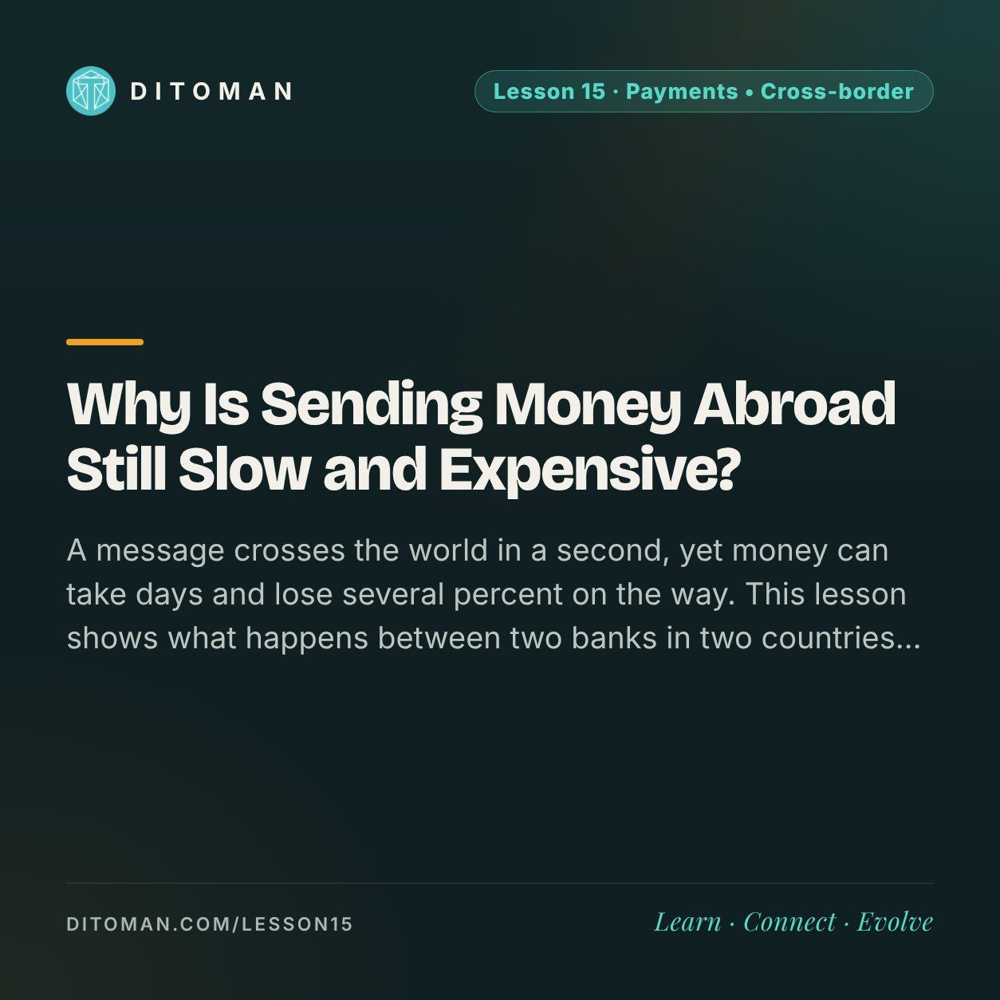

Why Is Sending Money Abroad Still Slow and Expensive?
چرا فرستادن پول به یک کشور دیگر هنوز سخت و گران است؟
A message crosses the world in a second, yet money can take days and lose several percent on the way. This lesson shows what happens between two banks in two countries, where the cost hides, and what stablecoins change and do not change.
یک پیام در یک ثانیه به آن سر دنیا میرسد، ولی پول ممکن است چند روز در راه باشد و چند درصدش هم کم شود. این درس نشان میدهد میان دو بانک در دو کشور چه میگذرد، هزینه کجا پنهان است و استیبلکوینها چه چیزی را عوض میکنند و چه چیزی را نه.
Lesson Content
محتوای درس
Read the lesson in English or Persian.
درس را به فارسی یا انگلیسی بخوانید.
A worker abroad sends 200 dollars home to his family. A student needs to pay a university fee in another country. A small business pays a supplier overseas. All three face the same surprise: the transfer takes days, and a visible part of the money disappears on the way.
Inside one country, Lesson 14 showed a single network connecting every bank. Between countries, no such network exists. That one fact explains almost everything in this lesson.
01. Money does not travel
The first thing to know is that money does not actually cross the border. What crosses is a message, and then banks adjust their books.
If Bank A in one country wants to pay Bank B in another, the two need a place where both have an account. Usually that is a large international bank, called a correspondent bank. Bank A's account there goes down, Bank B's goes up, and the payment is done.
When the two banks share no correspondent, the payment hops through two or three banks in a row. Every hop adds time, a fee and a compliance check.
02. What SWIFT is, and is not
SWIFT is a secure messaging network that more than 11,000 financial institutions in over 200 countries use to send each other payment instructions. It was founded in 1973.
SWIFT carries the instruction. It does not hold or move the money. The money moves through the correspondent accounts described above. This is also why being cut off from SWIFT matters so much to a country's banks: without the messages, the ordinary route is closed.
- 1The sender pays their bank in local currency.
- 2The bank converts the currency at its own rate and sends an instruction, often through SWIFT.
- 3A correspondent bank moves the balance between the two banks' accounts. There may be more than one.
- 4Each bank runs its checks and may deduct a fee.
- 5The receiver's bank credits the account, hours or days later.
03. Where the cost hides
The World Bank tracks the cost of sending 200 dollars between countries. In early 2025 the global average was about 6.5 percent, more than double the United Nations target of 3 percent. Banks were the most expensive channel and digital services the cheapest.
That cost has three parts.
The stated fee: the charge you see when you send.
The exchange rate margin: the provider converts at a rate worse than the market rate and keeps the difference. This is often the larger part, and it appears on no receipt.
Fees on the way: intermediary banks may each deduct a charge, so less arrives than was sent.
To compare providers, ignore the advertised fee and ask one question: if I pay this amount, exactly how much arrives in the other currency?
04. Why it is slow
Banks in different time zones are open at different hours, and many payment systems close at night and on weekends. Each bank on the route must also check the payment against rules on money laundering and sanctions. One unclear detail can hold a payment for days.
05. The old informal route
Long before banks, traders used trust networks. A sender pays a broker in one city, and the broker's partner in another city pays the receiver. The two brokers settle between themselves later. In many countries this is known as hawala, and it still moves large sums where banks are slow, costly or unavailable.
It can be fast and cheap. It also depends completely on the broker's honesty and, in many places, sits outside legal protection.
06. What stablecoins change
A dollar stablecoin can move between two wallets in minutes, at any hour, for a small network fee. No correspondent bank is involved in that step. This is the main reason stablecoins are increasingly used for cross-border payments.
But the hard parts move to the two ends. The sender must first turn local money into the token, and the receiver must turn it back, usually through an exchange or a broker with its own fee, rate and rules. And the token brings the risks from Lesson 11: the issuer, the backing and the way out.
So a stablecoin can shorten the middle of the journey. It does not remove the first and last step.
What to take from this
Money does not cross borders. Messages do, and banks adjust accounts they hold with each other.
SWIFT carries instructions. Correspondent banks move the balances.
The real cost is the fee plus the exchange rate margin. Ask how much arrives.
Delays come from time zones, closed systems and compliance checks.
Stablecoins speed up the middle of the route. Getting in and out is still where cost and risk sit.
کارگری در خارج ۲۰۰ دلار برای خانوادهاش میفرستد. دانشجویی باید شهریهی دانشگاهی را در کشوری دیگر بپردازد. یک کسبوکار کوچک به تأمینکنندهای آن طرف دنیا پول میدهد. هر سه با یک چیز روبهرو میشوند: انتقال چند روز طول میکشد و بخشی از پول در راه کم میشود.
درس ۱۴ نشان داد داخل یک کشور، یک شبکه همهی بانکها را به هم وصل میکند. میان کشورها چنین شبکهای وجود ندارد. تقریباً همهی این درس از همین یک واقعیت میآید.
۰۱. پول سفر نمیکند
اولین نکته این است که پول واقعاً از مرز رد نمیشود. چیزی که رد میشود یک پیام است و بعد بانکها دفترهایشان را اصلاح میکنند.
اگر بانک «الف» در یک کشور بخواهد به بانک «ب» در کشوری دیگر پول بدهد، هر دو به جایی نیاز دارند که در آن حساب داشته باشند. اینجا معمولاً یک بانک بزرگ بینالمللی است که به آن بانک کارگزار میگویند. حساب بانک «الف» نزد او کم میشود، حساب بانک «ب» زیاد میشود و پرداخت انجام شده است.
وقتی دو بانک کارگزار مشترکی ندارند، پرداخت از دو یا سه بانک پشت سر هم میگذرد. هر ایستگاه زمان، کارمزد و یک بررسی قانونی اضافه میکند.
۰۲. سوئیفت چه هست و چه نیست
سوئیفت یک شبکهی پیامرسان امن است که بیش از ۱۱ هزار مؤسسهی مالی در بیش از ۲۰۰ کشور، دستور پرداخت را با آن برای هم میفرستند. این شبکه در سال ۱۹۷۳ تأسیس شد.
سوئیفت دستور را میبرد. پول را نگه نمیدارد و جابهجا هم نمیکند. پول از راه همان حسابهای کارگزاری که گفتیم جابهجا میشود. برای همین قطع شدن از سوئیفت برای بانکهای یک کشور اینقدر مهم است: بدون پیام، مسیر معمول بسته میشود.
- ۱فرستنده به پول محلی به بانک خودش پرداخت میکند.
- ۲بانک ارز را با نرخ خودش تبدیل میکند و دستور پرداخت را، اغلب از راه سوئیفت، میفرستد.
- ۳بانک کارگزار موجودی را میان حساب دو بانک جابهجا میکند. ممکن است بیش از یک بانک در راه باشد.
- ۴هر بانک بررسیهای خودش را انجام میدهد و ممکن است کارمزدی کم کند.
- ۵بانک گیرنده چند ساعت یا چند روز بعد پول را به حساب مینشاند.
۰۳. هزینه کجا پنهان است
بانک جهانی هزینهی فرستادن ۲۰۰ دلار میان کشورها را دنبال میکند. در اوایل ۲۰۲۵ میانگین جهانی حدود ۶٫۵ درصد بود؛ بیش از دو برابر هدف ۳ درصدی سازمان ملل. بانکها گرانترین راه بودند و سرویسهای دیجیتال ارزانترین.
این هزینه سه بخش دارد.
کارمزد اعلامشده: مبلغی که موقع ارسال میبینیم.
فاصلهی نرخ تبدیل: فرستندهی پول ارز را با نرخی بدتر از نرخ بازار تبدیل میکند و تفاوت را برمیدارد. این بخش اغلب بزرگتر است و روی هیچ رسیدی نمیآید.
کارمزدهای میان راه: هر بانک واسطه ممکن است مبلغی کم کند و در نتیجه کمتر از مبلغ فرستادهشده به مقصد برسد.
برای مقایسه، کارمزد تبلیغشده را کنار بگذارید و فقط یک چیز بپرسید: اگر این مبلغ را بدهم، دقیقاً چقدر به پول مقصد به دست گیرنده میرسد؟
۰۴. چرا کند است
بانکها در منطقههای زمانی مختلف در ساعتهای متفاوتی بازند و بسیاری از سامانههای پرداخت شبها و آخر هفته بستهاند. هر بانکِ مسیر هم باید پرداخت را با قواعد پولشویی و تحریم بسنجد. یک جزئیات نامشخص میتواند پرداخت را چند روز نگه دارد.
۰۵. راه قدیمی و غیررسمی
خیلی پیش از بانکها، بازرگانان از شبکههای اعتماد استفاده میکردند. فرستنده در یک شهر به یک صراف پول میدهد و همکار آن صراف در شهری دیگر به گیرنده میپردازد. دو صراف بعداً میان خودشان حساب را صاف میکنند. این همان «حواله» است و هنوز هر جا بانک کند، گران یا در دسترس نباشد، مبلغهای بزرگی را جابهجا میکند.
میتواند سریع و ارزان باشد. در عوض کاملاً به درستکاری صراف بستگی دارد و در بسیاری جاها بیرون از حمایت قانونی است.
۰۶. استیبلکوین چه چیزی را عوض میکند
یک استیبلکوین دلاری میتواند در چند دقیقه، در هر ساعتی و با کارمزد شبکهی اندک، میان دو کیف پول جابهجا شود. در این مرحله بانک کارگزاری در کار نیست. دلیل اصلی اینکه استیبلکوینها روزبهروز بیشتر در پرداخت بینالمللی به کار میروند همین است.
ولی بخشهای سخت به دو سرِ مسیر منتقل میشود. فرستنده اول باید پول محلی را به توکن تبدیل کند و گیرنده باید آن را دوباره به پول تبدیل کند؛ معمولاً از راه صرافی یا واسطهای که کارمزد، نرخ و قواعد خودش را دارد. توکن هم ریسکهای درس ۱۱ را با خودش میآورد: ناشر، پشتوانه و راه خروج.
پس استیبلکوین میتواند میانهی سفر را کوتاه کند. قدم اول و آخر را حذف نمیکند.
چه برداشتی کنیم
پول از مرز رد نمیشود. پیام رد میشود و بانکها حسابهایی را که نزد هم دارند اصلاح میکنند.
سوئیفت دستور را میبرد. بانکهای کارگزار موجودی را جابهجا میکنند.
هزینهی واقعی، کارمزد بهاضافهی فاصلهی نرخ تبدیل است. بپرسید چقدر به مقصد میرسد.
تأخیر از تفاوت ساعت، سامانههای بسته و بررسیهای قانونی میآید.
استیبلکوین میانهی مسیر را سریع میکند. هزینه و ریسک هنوز در ورود و خروج است.
See the crypto route in detail
مسیر کریپتویی را با جزئیات ببینید
Lesson 16 follows a crypto transfer the same way: address, network, fee and confirmation. Lesson 11 explains what stands behind the stablecoins used for these payments.
درس ۱۶ یک انتقال کریپتویی را به همین شکل دنبال میکند: آدرس، شبکه، کارمزد و تأیید. درس ۱۱ توضیح میدهد پشت استیبلکوینهایی که در این پرداختها به کار میروند چه چیزی هست.
Key Concepts
مفاهیم کلیدی
- Cross-border payment
- Correspondent bank
- SWIFT
- Remittance
- Exchange rate margin
- Intermediary fees
- Compliance checks
- Hawala
- On-ramp and off-ramp
- پرداخت بینالمللی
- بانک کارگزار
- سوئیفت
- حوالهی کارگران مهاجر
- فاصلهی نرخ تبدیل
- کارمزد بانکهای واسطه
- بررسیهای قانونی
- حواله
- ورود و خروج از کریپتو
Learning Objectives
اهداف یادگیری
- Explain why money itself does not cross a border.
- Describe what a correspondent bank does.
- Say what SWIFT does and what it does not do.
- Find the three parts of the cost of an international transfer.
- Explain which part of the journey a stablecoin shortens and which parts remain.
- توضیح دهید چرا خودِ پول از مرز رد نمیشود.
- بگویید بانک کارگزار چه کاری میکند.
- بگویید سوئیفت چه کاری میکند و چه کاری نمیکند.
- سه بخش هزینهی یک انتقال بینالمللی را پیدا کنید.
- توضیح دهید استیبلکوین کدام بخش مسیر را کوتاه میکند و کدام بخشها سر جایشان میمانند.
Quiz
آزمونک
Check what stayed with you. The answer is under each question.
ببین چه چیزی در ذهنت مانده. پاسخ زیر هر پرسش آمده است.
Question 1
پرسش ۱
What does SWIFT do?
سوئیفت چه کاری میکند؟
A. It holds banks' money
الف. پول بانکها را نگه میدارد
B. It carries payment instructions between institutions
ب. دستور پرداخت را میان مؤسسهها میبرد
C. It sets exchange rates
ج. نرخ ارز را تعیین میکند
Correct answer: B
پاسخ درست: ب
Question 2
پرسش ۲
Where is the cost of a transfer most often hidden?
هزینهی یک انتقال بیشتر کجا پنهان میشود؟
A. In the exchange rate margin
الف. در فاصلهی نرخ تبدیل
B. In the receipt paper
ب. در کاغذ رسید
C. In the receiver's phone bill
ج. در قبض تلفن گیرنده
Correct answer: A
پاسخ درست: الف
Question 3
پرسش ۳
What is a correspondent bank?
بانک کارگزار چیست؟
A. A bank that prints foreign currency
الف. بانکی که ارز خارجی چاپ میکند
B. A bank where two other banks both hold accounts
ب. بانکی که دو بانک دیگر هر دو در آن حساب دارند
C. A government office that approves transfers
ج. ادارهای دولتی که انتقال را تأیید میکند
Correct answer: B
پاسخ درست: ب
Question 4
پرسش ۴
What is the best single question for comparing transfer services?
بهترین پرسش برای مقایسهی سرویسهای انتقال پول کدام است؟
A. What is the advertised fee?
الف. کارمزد تبلیغشده چقدر است؟
B. How many branches does it have?
ب. چند شعبه دارد؟
C. Exactly how much arrives in the other currency?
ج. دقیقاً چقدر به پول مقصد میرسد؟
Correct answer: C
پاسخ درست: ج
Question 5
پرسش ۵
Which part of an international payment does a stablecoin not remove?
استیبلکوین کدام بخش پرداخت بینالمللی را حذف نمیکند؟
A. Converting local money into the token and back
الف. تبدیل پول محلی به توکن و برگرداندن آن
B. The correspondent bank in the middle step
ب. بانک کارگزار در مرحلهی میانی
C. Weekend closing hours
ج. تعطیلی آخر هفته
Correct answer: A
پاسخ درست: الف
Sources
منابع
- World Bank: Remittance Prices Worldwide
- SWIFT: About us
- BIS CPMI: Cross-border payments programme
- United Nations: SDG 10, target 10.c on remittance costs
The average cost is from the World Bank's Remittance Prices Worldwide report for the first quarter of 2025. Later quarters may differ.
میانگین هزینه از گزارش «قیمت حواله در جهان» بانک جهانی برای فصل اول ۲۰۲۵ است. فصلهای بعد ممکن است فرق کند.
با هم دنبال میکنیمFollow along
New lessons are announced first on Ditoman's channels.
درسهای تازه اول در کانالهای دیتومان معرفی میشوند.